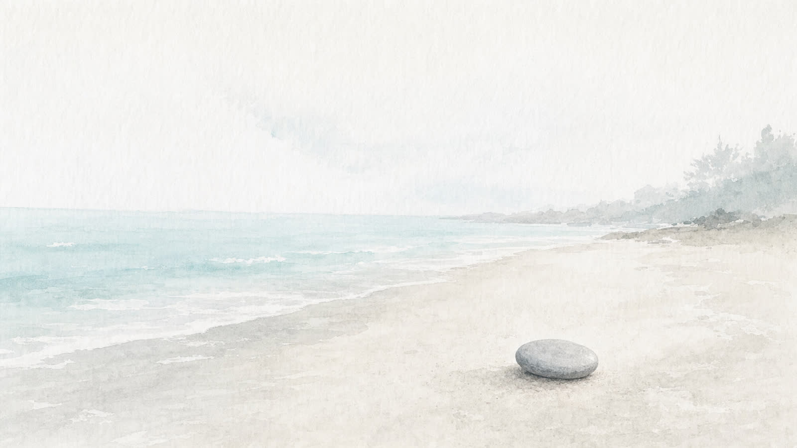
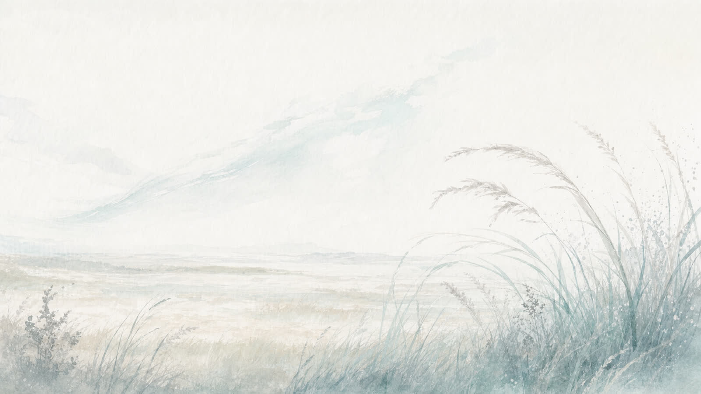
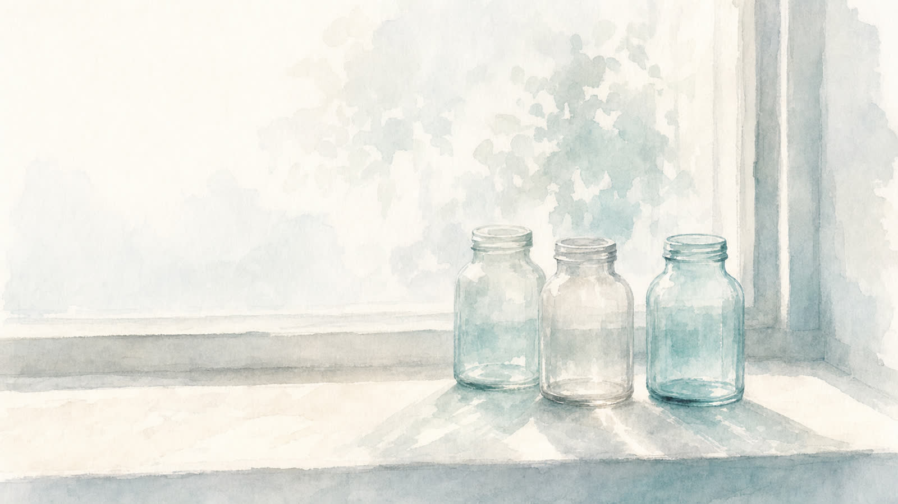
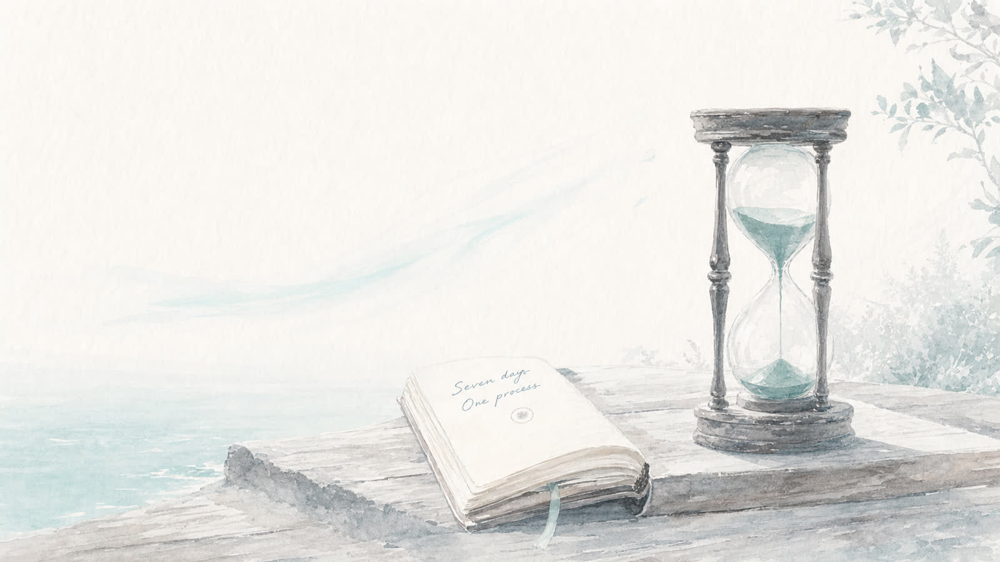
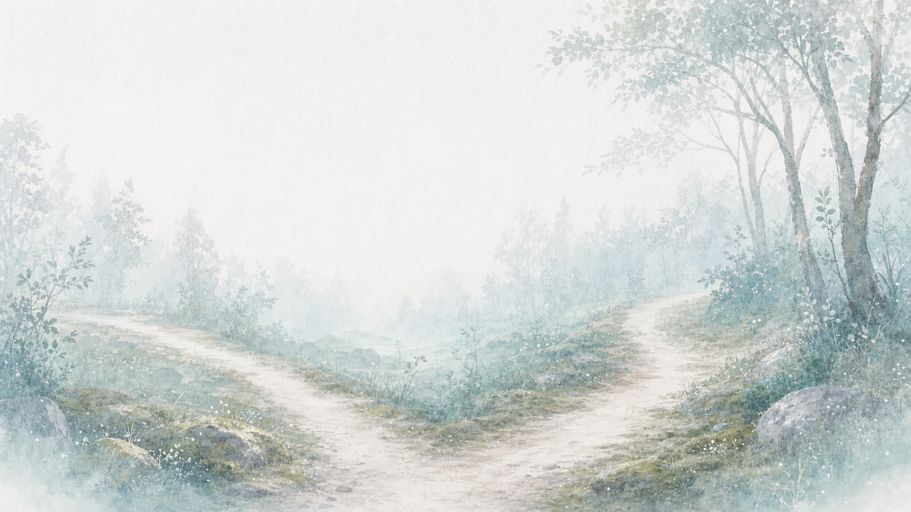
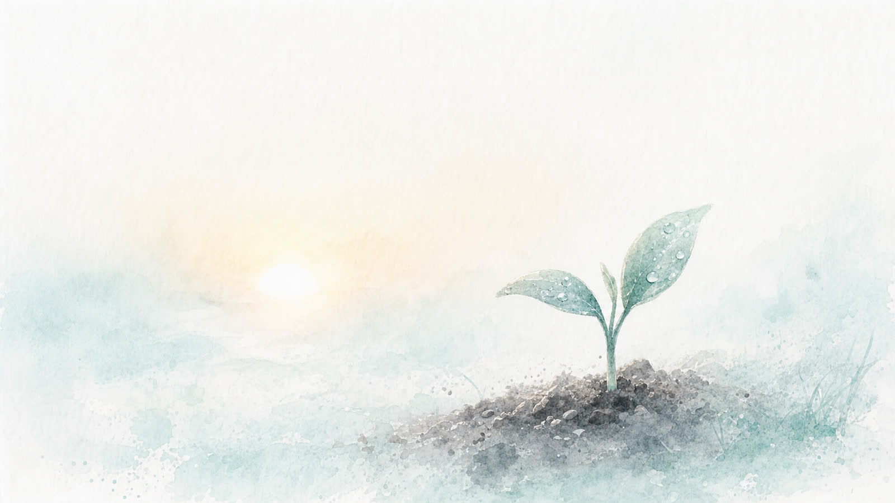

A Big Dream gives direction. The process gives movement. This guide helps you turn your Big Dream into a first seven-day process.
A dream usually stalls for one reason: the first repeatable process never gets built.
This guide is short and practical.
By the end of it, you will have one process you can run for seven days, an if-then plan for when friction shows up, and the first visible sign that this dream is becoming real.
Your answers are saved on your device as you go. You can leave and come back.
Pieter and Marietjie return as fictional example participants. Use their examples only if you feel stuck.
From Guide 3, Pieter's Big Dream: to become a present father, a healthier owner and a calm leader of his own life.
From Guide 3, Marietjie's Big Dream: to become a woman with her own voice, a teacher, a writer and a present mother.
This guide uses three practical methods:
Holding the Big Dream and the current reality together so you can see the gap clearly.
Designing if-then plans so friction does not derail you.
Naming exactly what you will do, when, where and for how long.
A dream without a process becomes a feeling.
A process without a dream becomes a chore.
This guide brings the two together.
Carry your Big Dream from Guide 3 into this guide.
One sentence is enough.
Honest, not harsh. Describe where you actually are right now in the part of your life this dream is asking you to build.
I am working in the business every day. I sleep poorly. I am short-tempered with my children. I have not exercised properly in months. I am the bottleneck of every decision.
I teach all week, I take work home most evenings, I rarely write, I am tired, I say yes to everyone and I have stopped having any time that is mine alone.
Between the Big Dream and the current reality there is a gap.
The gap is not your enemy. It is the field you will work in for the next seven days.
You cannot work on the whole gap at once. Choose one area where a small, repeatable process will create the most movement towards your dream.

Area: Health and energy: rebuilding sleep, movement and meals.
Why: because without a working body the rest of the dream cannot happen.
Area: Creative work: a small writing practice.
Why: because writing is the practice that brings my own voice back.
Friction is normal. Friction is information.
When you imagine doing this process every day for seven days, what do you feel?

Friction is rarely just a feeling.
It usually arrives with a voice that tells a story about you.

Story: “If I don't handle it, no one will.”
Avoidance: jumping into operational work instead of resting or training my team.
Voice: Judge / Critic: telling me a real owner would just push harder.
Story: “I'm being selfish for taking writing time.”
Avoidance: doing extra school work or housework instead of writing.
Voice: Comforter: keeping me in roles that feel safe and approved.
POPDUH stands for six common patterns that block the people we want to become.
Naming yours makes it easier to interrupt.
Pattern: Hustle: making myself feel worthy by being constantly busy.
Shows up as: taking on operational fires instead of leading.
Pattern: Perfectionism: refusing to write anything that is not already “good enough”.
Shows up as: editing in my head and never starting the page.
Now design the actual process you will run every day for seven days.
It should be small enough to be easy and clear enough to be measurable.

Practice: a daily morning routine that protects health and clear thinking before the business gets my attention.
What: 20 minutes of movement and 10 minutes of planning the day's three priorities. When: 6:00 to 6:30 each morning. Where: in my study and the garden. How long: 30 minutes.
Remove: phone off until 6:30. Visible outcome: seven days of mornings logged in a simple notebook.
Practice: a short, honest writing practice each morning.
What: two pages of writing without editing. When: 6:15 to 6:45 each morning. Where: at the kitchen table before anyone else is up. How long: 30 minutes.
Remove: no email or phone until after writing. Visible outcome: 14 pages of honest writing at the end of seven days.
Friction will arrive. When it does, you do not want to be deciding in the moment. You want a plan you have already made.

If I wake up tired and want to skip the morning routine, then I will still get up at 6:00, drink water and do five minutes of slow movement before I decide anything else.
If I sit down to write and feel that it is selfish, then I will breathe slowly for thirty seconds, remind myself this is part of being a present mother, and write one honest sentence anyway.
A dream becomes real the first time you can see it in your own life.
Make the first sign small, soon and visible.

First visible sign: a notebook on my desk with seven mornings logged.
Within 24 hours: set the alarm for 6:00 and put the notebook and pen on my bedside table tonight.
First visible sign: a small folder of writing on my laptop labelled “My voice, week one”.
Within 24 hours: create the folder, write one honest paragraph and save it.
A commitment is a small, honest promise to yourself.
Make it short enough to remember and clear enough to keep.
Read your seven-day commitment. Then ask:
If yes, run it for seven days, then return to this guide and adjust.
If not, soften the process until it is small enough to be kept.
A dream you can practise for seven days is a dream you can live for seven years.
Much love,
Francois
Your reflection is saved on this device. No one else can see it.